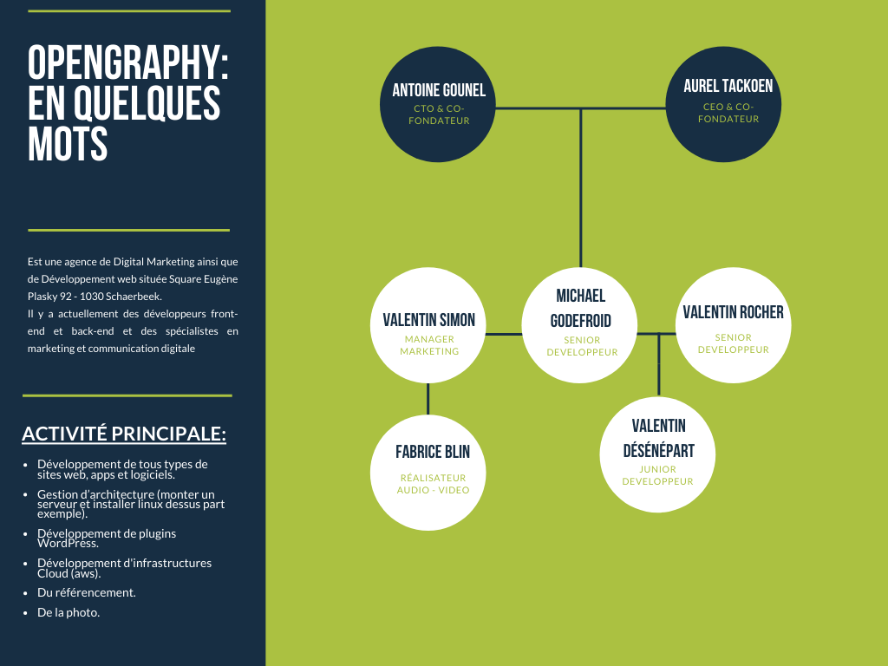

J’ai pris contact avec l’agence par téléphone.
J’ai directement eu Antoine qui est le CTO d’ OpenGraphy , d’un air très enthousiaste il a directement accepté ma demande d’interview.
Arrivé à l’agence je suis accueillie par Antoine qui me présente les lieux, et aussi Michael qui est le développeur senior avec qui je ferai mon interview. Avant même d’avoir pu commencer mon interview, Il m’a aussi conseillé de ne pas hésiter à le recontacter plus tard si je cherche un stage, il sera ravi de pouvoir m’aider si l’occasion se présente, car il y a souvent des stagiaires là-bas.
S’il y a bien une chose que je retiens de cette rencontre c’est que même si le boulot peut par moment être compliqué, l’ambiance et l’entente entre chacun sont super, et ils n’hésitent pas à s’entraider et cela m’a vraiment donné envie de tenter ma chance pour faire un stage chez eux.
Ça fait plaisir de discuter avec quelqu’un qui prend plaisir de vous parler de son travail, l’impression que Michael m’a donnée surtout c’est que pour lui c’était plus une passion qu’une obligation de travailler dans ce domaine.
